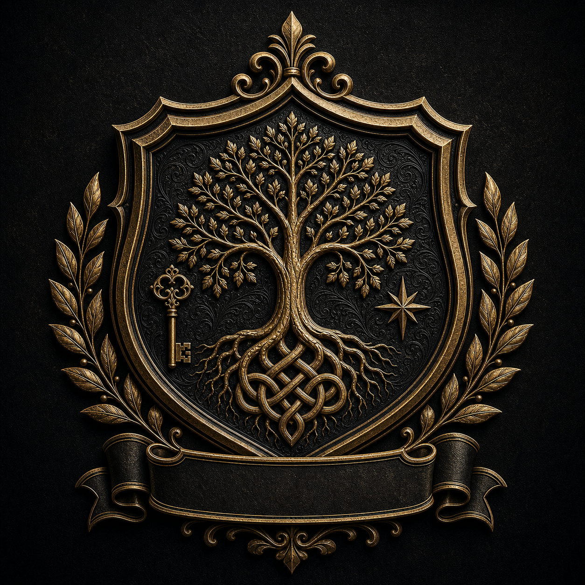
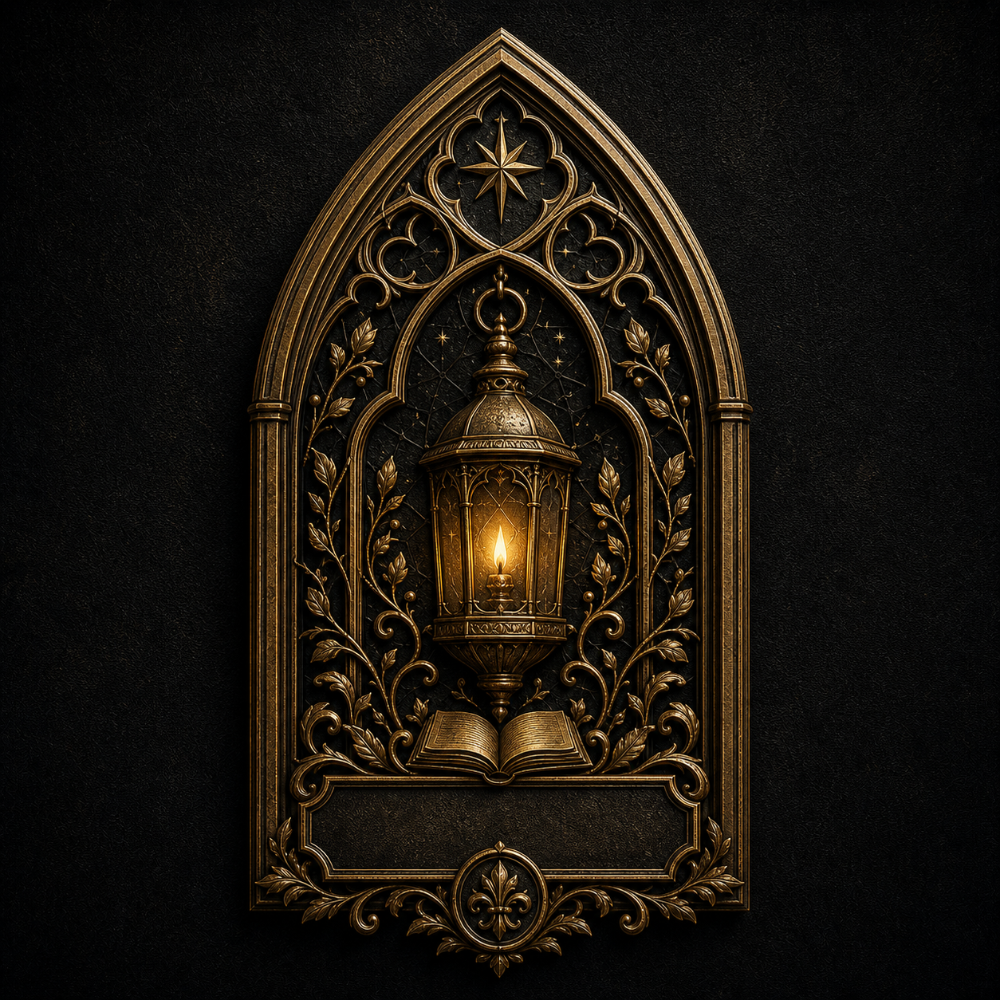
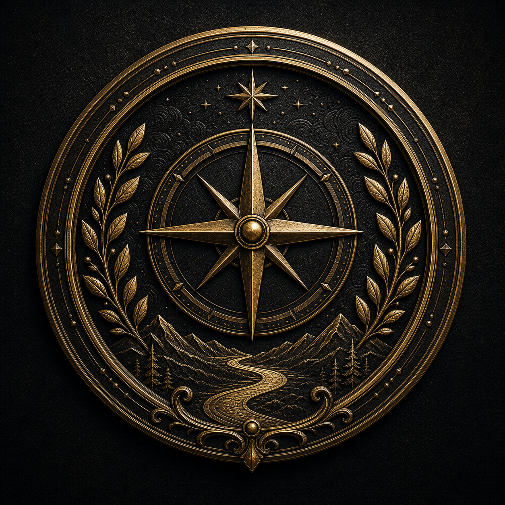
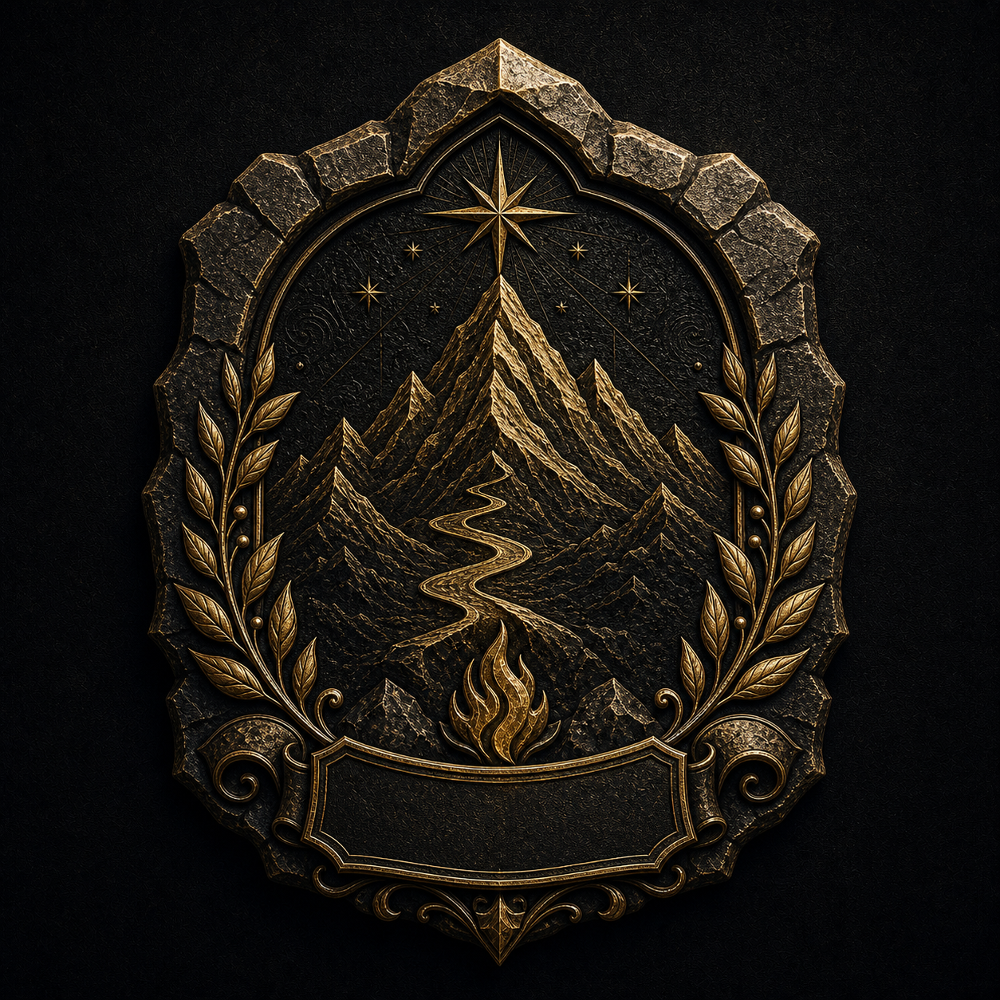

01a
Classic Shield Legacy
- Approval
- Founder/CSO approved primary production direction.
- Connected usage
crest_variant_1_png
Internal inventory for recovered Founder/CSO-approved MyKinLegacy visual assets. These assets were copied from previous approved review folders and connected to production artifact generation without regenerating or redesigning artwork.

01a
crest_variant_1_png
03a
crest_variant_2_png
05a
crest_variant_3_png
08a
Production status: the three main crest PNG deliverables now use recovered official assets. ZIP and Vault inherit those assets after fresh generation or artifact repair.
Strict full-production status: NO. The main crest assets are official, but not every customer-facing download is fully official-asset covered yet.
Remaining gap: no approved transparent crest PNG was found. Transparent crest output still uses the existing fallback renderer until Founder approves a transparent official asset. No approved standalone certificate frame/background or PDF ornament asset was found.